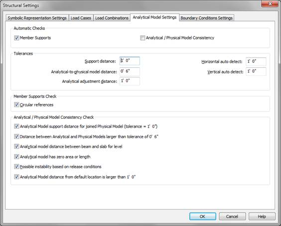
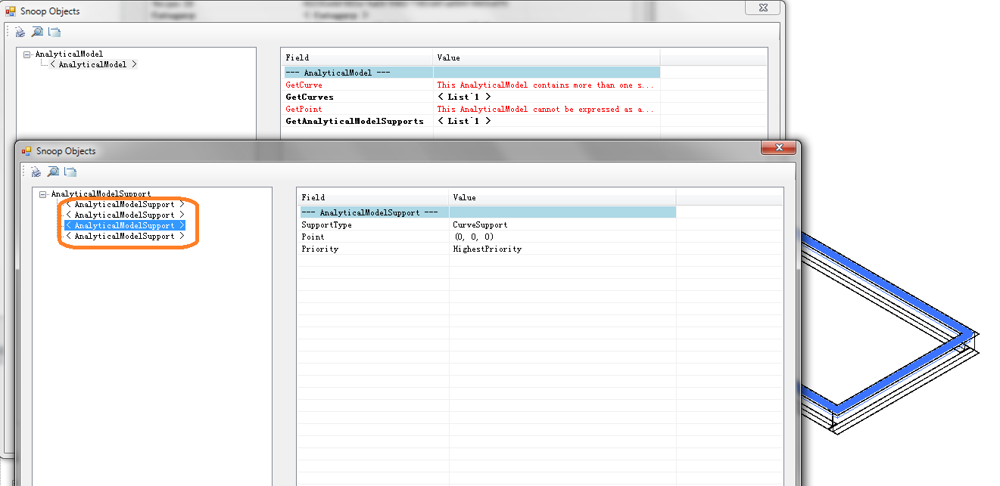

Finding Connected Structural Elements
We had some glimpses in the past of the structural analytical model maintained by Revit Structure, e.g. when looking at
- The AnalyticalViewer SDK sample
- Revit Structure API Resources
- The Analytical support tolerance
- An overview of geometry options
- The Revit Structure 2011 API
Here is a very basic question that can be addressed using the analytical model:
Question: Is there any way to find connected structural elements?
For example, to find columns from a connected beam, or beams from a floor placed on them?
A wall can be found from the Host property of a door or window hosted by it, but the Host property is null in the beams and columns I am looking at.
Answer: We discussed a straightforward geometrical solution to find intersecting elements which would work well if the beam or column is vertical or aligned with the cardinal coordinate system axes.
This solution is only available from Revit 2011 onwards, because there was no BoundingBoxIntersectsFilter before that.
There is also a property to find connectivity, if the structural model has been set up appropriately:
You can use the analytical model support information to find the elements that support a specified element. In your example, for a given floor, it can return the beams that support the floor.
I created a model with four beams, then created a floor by selecting the four beams as boundary. In the structural settings dialog, under the Analytical Model Settings tab, you need to check 'Member supports' as shown:

This causes Revit to calculate the support relationship between structural elements.
Now the floor can be selected and its supporting beams are displayed in RevitLookup:

Each supporting beam can be retrieved using the AnalyticalModelSupport GetSupportingElement method.
For a given beam, its supporting columns can be retrieved in the same way.
By the way, please note that the class hierarchy for accessing the structural analytical model was replaced in the Revit Structure 2011 API. The new class hierarchy offers a more streamlined interface and more capabilities to read data and modify analytical model settings. This also affects the analytical model support access. The details are listed in the What's New section of the Revit 2011 API help file RevitAPI.chm, under 'Replacement for AnalyticalModel'.